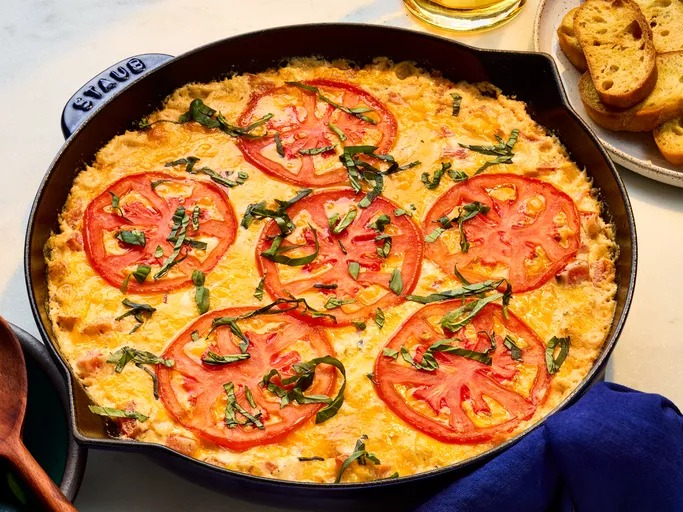

Tomato Pie Dip

A Southern classic reimagined, this irresistible Tomato Pie Dip is perfect for any occasion of the season. With layers of ripe, juicy tomatoes, fresh basil, and a creamy three-cheese spread, this crowd-pleasing dip brings all the comfort of a traditional tomato pie straight to your appetizer spread.
Ingredients
- cooking spray
- 3 red beefsteak tomatoes, cored
- li teaspoon kosher salt, divided
- 1 (8-ounce) package cream cheese, softened
- 1/2 cup mayonnaise
- 1/2 cup chopped Vidalia onion (from 1 small [5 ounce] onion)
- 1/4 cup loosely packed fresh basil leaves, cut into thin slices, plus more for garnish
- 1/2 cup shredded low-moisture part-skim mozzarella cheese
- 1/4 cup freshly grated Parmesan cheese
- 1 1/2 teaspoons hot sauce (such as Tabasco)
- 1 teaspoon Worcestershire sauce
- 1/2 teaspoon onion powder
- 1/4 teaspoon freshly ground black pepper
- 1 cup shredded sharp Cheddar cheese
- crostini toast
Instructions
- Gather all ingredients. Preheat oven to 350 degrees F (175 degrees C). Lightly coat a 10-inch skillet with cooking spray; set aside.
- Trim top and bottom of 1 of the tomatoes; cut into 6 (1/4-inch-thick) slices; place slices between 2 layers of paper towels; set aside. Seed and chop remaining tomatoes; place in a colander set over a medium bowl; sprinkle with 1/4 teaspoon of the salt, tossing gently to distribute salt. Let stand for 10 minutes. Lightly pat tomatoes dry with a clean kitchen towel; discard liquid.
- While tomatoes are resting, stir together cream cheese, mayonnaise, onion, basil, mozzarella cheese, Parmesan cheese, hot sauce, Worcestershire sauce, onion powder, black pepper, 3/4 cup of the Cheddar cheese, and remaining 3/4 teaspoon salt in a medium bowl until thoroughly combined; gently fold in chopped tomatoes until evenly distributed.
- Transfer tomato mixture to prepared skillet, spreading it into an even layer. Sprinkle evenly with remaining 1/4 cup Cheddar cheese and top with sliced tomatoes.
- Bake in the preheated oven until cheese is fully melted and edges are bubbling, 25 to 30 minutes.
- Garnish with additional basil and serve immediately with crostini.